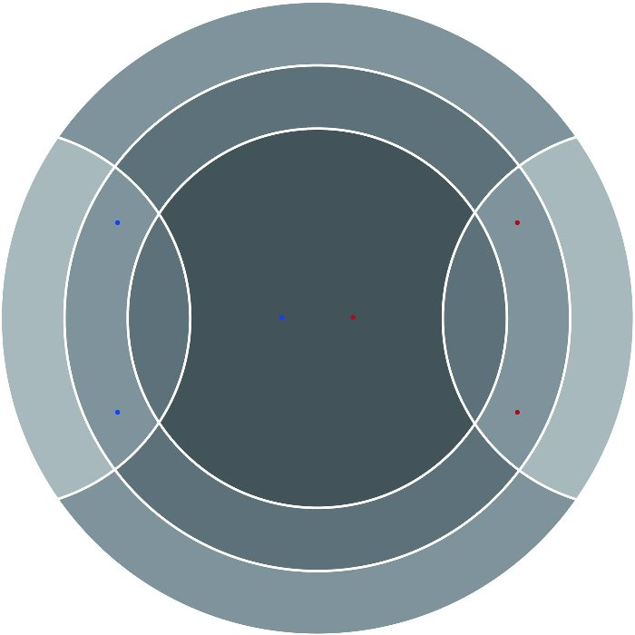

(steel board with the red and blue tripods, shot from a low angle)
How it plays
Each player has one tripod piece on a round steel board. On your turn you pin one foot and swing the other two around it in an arc, so pieces move continuously rather than from square to square.
A piece may cross only one line per turn. Attacks have to be set up over several moves, and a player who is pushed near the edge can often turn the pressure around. You win by pushing one of your opponent's feet off the rim.

The board: two rings and two facing arcs. The lines limit how far a piece can travel in a turn, which is where most of the strategy comes from.
Why it's different
- It was designed from sumo and judo. The contest is over balance and position, and nothing is ever captured.
- There are no straight lines or grid. Positions are read by how pieces sit relative to each other and to the edge.
- The feet carry small magnets that grip the steel board, so pieces slide cleanly and stay exactly where they are placed.
- The rules fit on a card, and new players are usually competitive after a few games.
Evidence
- A free digital version at tau-game.com has online ranked play and eleven levels of AI opponent. A Steam release is due [month].
- A neural network trained on Tau in the style of AlphaZero found no forced win, and games become more varied as the level of play rises.
- [35] ranked online players and [N] sign-ups for a physical set. Community posts in English, French, German and Korean, and coverage by an independent YouTube creator.
Components
A 267 mm brushed steel disc in a base, two nylon tripod pieces with magnets in the feet, and a rules card. A 400 mm edition suits a premium tier. At 500 units the disc is about US$3.90 and a painted pair of pieces about US$8, before packaging and freight. (Indicative supplier quotes.)